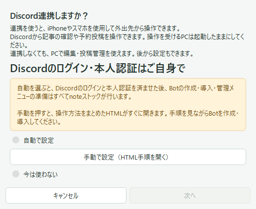
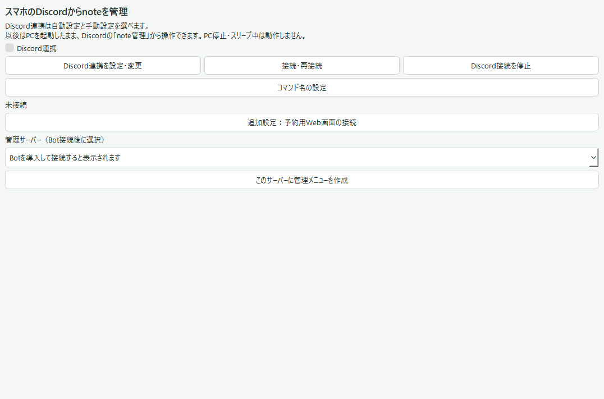

詳細説明書の目次
Discordの導入・接続先変更
自動・手動設定、サーバー選択、切断・再接続、Botを消した場合
自動設定と手動設定を選ぶ


初回の案内、またはPCの「Discord・セットアップ」→「Discord連携を設定・変更」から開始します。自動設定は、Discordへログインした本人が専用Botを用意する方式です。ログイン・本人認証・規約の確認は画面に従って自分で行います。
PCだけで使う場合は「今は使わない」を選び、後から同じタブで設定できます。未導入の他人のBotを勝手に使う方式ではありません。
自動で設定する手順
- 「自動で設定」を選びます。
- 新しいサーバーを作るか、既存サーバーへ入れるかを選びます。新規ならサーバー名を指定します。
- 表示されたガイドラインや開発者向け条件を読み、同意する場合に画面のチェックを入れます。
- 「設定を開始」で開くDiscord画面へ、使いたい本人アカウントでログインします。
- 二段階認証やCAPTCHAが表示されたら完了します。操作を求める案内が出ていないかPCも確認します。
- Botの作成・導入と接続が終わるまで待ち、管理チャンネルの操作メニューを確認します。
処理中に何度も設定を開始せず、現在の画面の案内と結果を確認してください。
手動で設定する手順
「手動で設定（HTML手順を開く）」を選びます。画像とチェック項目のある手動セットアップ手順で、Discord Developer Portalのアプリ作成、Bot、サーバーへの導入を順に進めます。
- 自分のDiscordアプリとBotを用意します。
- 案内にある権限で、使うサーバーへBotを導入します。
- PCの案内画面へBotトークンと導入先サーバーIDを入力します。
- 「保存して接続」を押し、接続結果を確認します。
BotトークンはPCの指定欄へ入力し、管理チャンネルのメッセージや画像に載せないでください。
管理するサーバー・チャンネルを選び直す


- Botを使うサーバーへ導入し、PCで「接続・再接続」を押します。
- 「管理サーバー（Bot接続後に選択）」で対象を選びます。
- 「このサーバーに管理メニューを作成」を押します。
- 選んだサーバーの「note管理」チャンネルと操作メニューを確認します。
サーバーを選べない場合は、Botが目的のサーバーへ導入されているかと接続状態を確認します。別サーバーの古いメニューは使わず、新しく設定した場所から操作してください。
Discord連携を止める・再接続する
「Discord接続を停止」でBotの接続を止めます。「接続・再接続」で再接続できます。「Discord連携」のチェックを外すと連携を無効にします。
Discordの接続停止は、PCの自動投稿を停止する操作ではありません。予約投稿も止めたい場合はメイン画面の自動投稿も停止してください。接続中・再接続中などの表示が出ている間は完了を待ちます。
BotをDiscord側で削除した・別のアカウントで開いた
アプリが見つからない場合、設定時に「新しいBotで設定」「同じBotを再確認」の選択が出ることがあります。
- Discord側で対象Botを削除した場合：新しいBotで設定し直します。以前のサーバー設定は残るため、導入先も確認します。
- 違うDiscordアカウントでDeveloper Portalを開いていた場合：正しいアカウントに戻して同じBotを再確認します。
「Discordアプリページを開く」から管理対象のアプリを確認できます。別のアプリのトークンや設定を混ぜないようにします。
本人限定操作と管理チャンネルの見え方
操作する本人・サーバー・チャンネルは登録情報で確認されます。Discordのサーバー管理者は、その権限により専用チャンネルを閲覧できる場合があります。
操作できる本人を増やす、サーバー全員へ記事管理を開放する、といった一般的な共同編集機能をこの説明書の標準設定として案内しているわけではありません。他人へアプリを渡すときも、使用中のdataやBotトークンは渡さず、相手本人が初期設定してください。